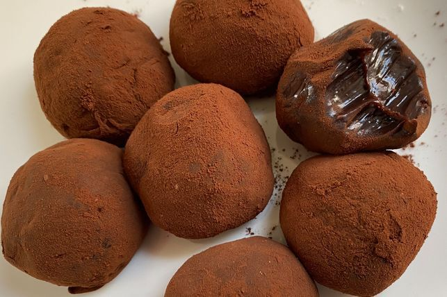

Chocolate Truffles

Description
There's nothing more satisfying than biting into luscious chocolate truffles,
especially when they're made with only two ingredients.
Ingredients
- 395g can NESTLÉ Sweetened Condensed Milk
- 30g (1/4 cup) NESTLÉ Plaistowe Premium Dutch Process Cocoa, plus extra to dust
Steps
- Place the condensed milk and cocoa in a medium saucepan over low heat. Cook, stirring, for 8 minutes or until mixture is very thick. Transfer mixture to a bowl.
Set aside to cool slightly before placing in the fridge for 1 hour to set.
- Use two teaspoonsful of the mixture to roll into smooth balls. Dust in extra cocoa powder to serve.